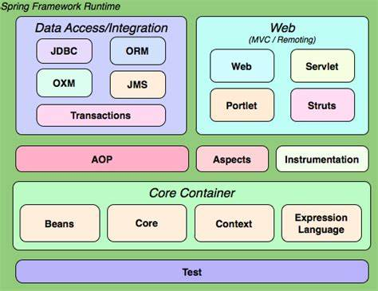

1 Spring介绍
1.1 Spring概述
Spring是一个开源框架，与2003年兴起的轻量级Java开发框架。它是为了解决企业应用开发的复杂性而创建的。Spring是一个轻量级的控制反转和面向切面的容器框架。
方便解耦，简化开发：
- Spring就是专门生产Bean的大工厂，可以将所有对象创建和依赖关系维护由Spring管理。
面向切面（AOP）编程的支持：
Spring提供面向切面编程，可以方便实现对程序进行权限拦截、运行监控等功能。
声明式事务的支持：只需要通过配置就可以完成对事物的管理，为无需手动编程。
方便程序的测试：
- Spring支持Junit4，可以通过注解方便测试Spring程序。
方便集成各种优秀框架：
- 其内部提供了对各种优秀框架的支持。
降低JavaEE API的使用难度：
- 对JavaEE开发中一些难用的API（JDBC、JavaMail、远程调用等），都提供了封装，这些API的应用难度大大降低。
1.2 Spring体系结构
Spring是一个分层结构，它包含一系列的功能要素并被分为大约20个模块。这些模块如下图所示：

2 Spring快速入门
web中集成Spring需要哪些包？IOC是什么？
2.1 编写流程
- 下载Spring开发包。
- 导入Spring的jar包。
- 配置Spring的核心xml文件
- 在程序中读取Spring的配置文件来获取bean（new好的对象）。
Spring各个版本的下载地址：
https://repo.spring.io/libs-release-local/org/springframework/spring/
第三方依赖包下载地址：
2.2 详细过程
写个简单的service。
UserServiceImpl.java
1 | public class UserServiceImpl implements UserService{ |
接下来使用Spring IoC控制反转创建实例，在src目录下写beans.xml配置文件。
1 |
|
test1.java
1 | public class test1 { |
结果：
1 | 创建用户...name01 |
会发现其实 us1 和 us2 是同一个对象。
2.3 IoC 控制反转
Inverse of Control 控制反转的概念，就是将原本在程序中手动创建对象的控制权，交给Spring框架管理。创建对象的控制权被反转到达了Spring框架。
2.4 DI 依赖注入
Dependency Injection 依赖注入，在Spring框架负责创建Bean对象时，动态地将依赖对象注入到Bean组件。
3 创建Spring容器的三种方式
3.1 三种方式
第一种：ClassPathXmlApplicationContext，参数中传入的是xml文件的对于src的相对路径。
1 | ApplicationContext context = new ClassPathXmlApplicationContext("beans.xml"); |
第二种：文件系统路径获得配置文件，绝对路径。
1 | ApplicationContext context = new FilePathXmlApplicationContext("C:\Users\38487\Desktop\IDEAWorkSpace\SpringDemo\src\beans.xml"); |
第三种：使用BeanFactory（已过时）。
1 | String path = "C:\Users\38487\Desktop\IDEAWorkSpace\SpringDemo\src\beans.xml"; |
在Spring内部：
- 解析xml文件，获取类名，id，属性。
- 通过反射，用类型创建对象。
- 给创建的对象赋值。
3.2 BeanFactory和ApplicationContext的对比
- BeanFactory采取延迟加载，第一次getBean时才会初始化Bean。
- ApplicationContext是对BeanFactory的扩展，提供了更多功能：
- 国际化处理。
- 事件传递。
- Bean自动匹配。
- 各种不同应用程的Context实现。
4 装配Bean
4.1 装配Bean的三种方式
所谓的装配Bean，就是在xml中写<bean>标签。
第一种：new实现类。
1 | <bean id="userService" class="com.Retur0.service.UserServiceImpl"></bean> |
第二种：通过静态工厂方法。
写一个静态工厂类，返回需要的对象。在Bean中配置这个工厂类，使用时getBean(“id”)，返回为需要的对象。
1 | <bean id="userService" class="com.Retur0.service.UserSereviceFactory" factory-method="createUserService"></bean> |
第三种：通过实例工厂方法。
写一个工厂类，返回需要的对象。
1 | <bean id="factory" class="com.Retur0.service.UserSereviceFactory"></bean> |
4.2 Bean的作用域
- singleton：单例，在Spring容器中只存在一个Bean实例，默认值。
- prototype：每次从容器中调用bean时吗，都返回一个新的实例。每次调用fgetBean()时，相当于执行new XXXBean()。
- request：每次HTTP请求都会创建一个新的Bean，该作用域仅适用于WebApplicationContext环境。
- session：同一个HTTP Session共享一个Bean，不同session使用不同bean。仅适用于WebApplicationContext环境。
- globalSession：一般用于Portlet应用环境，该作用域仅适用于WebApplicationContext环境。
1 | <bean id="userService" class="com.Retur0.service.UserServiceImpl" scope="prototype"></bean> |
5 xml依赖注入Bean属性
5.1 构造方法注入
在bean中，加入给属性初始化的构造函数。这样在xml中可以如下操作：
1 | <bean id="stu" class="com.Retur0.model.Student"> |
还可以这么写：
1 | <bean id="stu" class="com.Retur0.model.Student"> |
5.2 属性setter方法注入
通过<property>标签注入。
5.3 p命名空间注入
在xml文件的约束中加入一行：
1 | xmlns:p="http://www.springframework.org/schema/p" |
这样就引入了p命名空间，这个命名空间中有类的属性。
1 | <bean id="stu" class="com.Retur0.model.Student" p:username="name01" p:password="123456"></bean> |
在bean标签中如上配置，便可以使用命名空间对对象的属性进行初始化。
5.4 SpEL
Spring表达式。
- 对
<property>进行统一编程，所有内容都使用value。
1 | <property name="" value="#{表达式}"></property> |
#{123}、#{‘name01’}：数字、字符串。
#{beanId}：另一个bean引用。
#{beanId.propName}：操作数据。
#{beanId.toString()}：执行方法。
#{T(类).字段|方法}：静态方法或字段。
5.3 集合注入
集合注入的方法是给<property>添加子标签。
- 数组：
<array> - List：
<list> - Map：
<map>，map存放k/v键值对，使用<entry key="" value="">描述。 - Properties：
<props><prop key=""></prop>
5.4 注解注入
注解是一个类，可以在开发中取代xml配置文件。
@Component 取代<bean class="">。
@Component 取代<bean id="" class="">
@Repository(“名称”) ：dao层。
@Service(“名称”)：service层。
@Controller(“名称”)：web层。
@Autowired：根据类型自动注入。
.png)
@Qualifier(“名称”)：指定自动注入的id名称。
@Resource(name=”名称”)
@Scope(“prototype”)：bean为多例。
@PostConstruct：自定义初始化。
@PreDestory：自定义销毁。
例：
在本应由xml配置的UserServiceImpl类前加@Component注解以代替在xml中的配置。
test.java
1 |
|
beans.xml
1 |
|